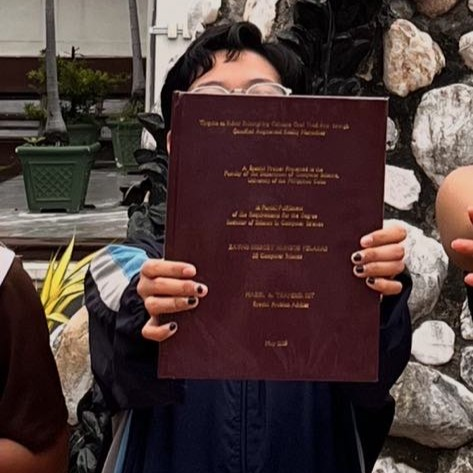
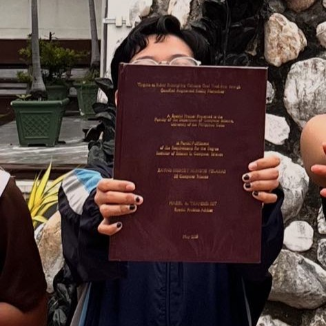

About the Creator
Tinguha sa Bulan is a solo project developed as part of the Special Problem course, a thesis-equivalent requirement in the Computer Science program at UP Cebu. Beyond fulfilling academic requirements, this project was driven by a personal concern—the fading presence of Cebuano oral literature in today’s modern and globalized world. To help address this, the game reimagines the traditional Visayan myth of the Bakunawa and the Seven Moons into a gamified, interactive story aimed at modern audiences, bridging the gap between heritage and technology.


 
